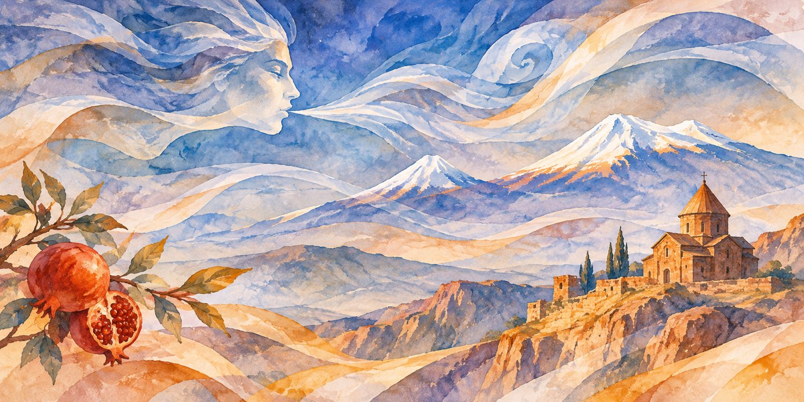

Арт-мидраш · Библия и художник
Приди ВЕТЕР с Севера ! П.Песн. 4:16
Ветер с Севера - образ Д.Святого, ветер, приносящий живительную влагу и прохладу . На иврите, как известно, ветер и дух - это одно и то же слово.

Эта часть нашего арт-мидраша была посвящена саду ПАРДЕС (способы толкования Библии в еврейской традиции).
Песн.4:12-16 12 Запертый сад - сестра моя, невеста, заключенный колодезь, запечатанный источник: 13 рассадники твои - сад с гранатовыми яблоками, с превосходными плодами, киперы с нардами, 14 нард и шафран, аир и корица со всякими благовонными деревами, мирра и алой со всякими лучшими ароматами; 15 садовый источник - колодезь живых вод и потоки с Ливана.
16 Поднимись [ветер] с севера и принесись с юга, повей на сад мой, - и польются ароматы его! - Пусть придет возлюбленный мой в сад свой и вкушает сладкие плоды его.